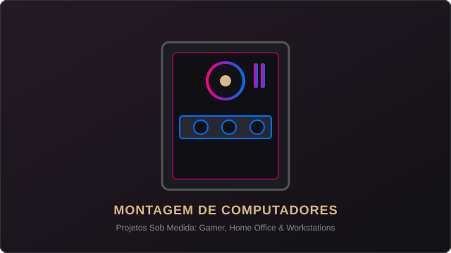

[Início] [Sobre] [Serviços] [Contatos] [Área cliente]
A Fix it é especializada em soluções completas para os seus dispositivos. Nossa equipe técnica oferece diagnósticos precisos e reparos eficientes para garantir que os seus equipamentos funcionem sempre com o máximo desempenho.
Clique em um dos serviços abaixo para realizar a sua solicitação:
Reparo e conserto completo de computadores e notebooks de diversas marcas e modelos.
[Solicitar Serviço]Instalação limpa, configuração de drivers e otimização para computadores, notebooks e celulares.
[Solicitar Serviço]
Projetos personalizados para PCs gamer, uso profissional ou estações de trabalho de alto desempenho.
[Solicitar Serviço]Resgate seguro de arquivos, documentos e dados perdidos ou corrompidos.
[Solicitar Serviço]Higienização interna e externa para prevenir superaquecimento e aumentar a vida útil do equipamento.
[Solicitar Serviço]Precisa de suporte ou quer acompanhar o andamento de um equipamento? Acesse a nossa Área do Cliente para gerenciar suas solicitações e ver o histórico completo dos serviços!